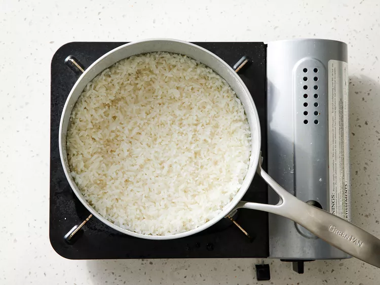

Steamed Rice

Description
This is a simple and efficient guide on how to make steamed rice that can go with any kind of dish. All your gonna need is some water , salt , calrose rise and some vegetable oil.This can be combined with the chicken breast to make a healthy and quick meal.
Ingredients
- 3 cups of water
- 2 Tablespoons of Vegetable oil
- 1 teaspoon of salt
- 2 cups of uncooked calrose rise , rinsed
Steps
- Bring water, oil, and salt to a boil in a saucepan over high heat.
- Insert the rice and cook untill water has cooked out. stir and then lower the heat to low. Allow it to sit for about 20-25 minutes.
- After time is up then open the lid and stir the rice again and now it is ready to be served.